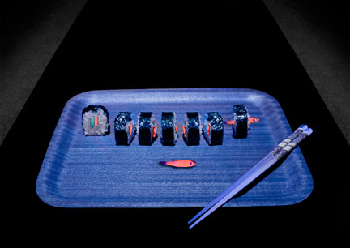
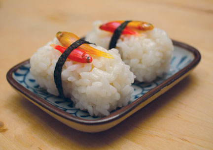
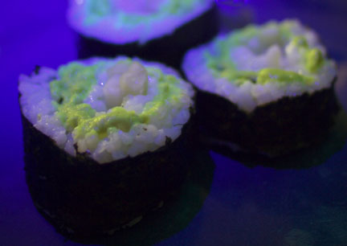

寿司が光りますか? おかしいと思いませんか?
スシが... 光る!! 遺伝子組み換えで光る熱帯魚で作ったスシというマッポーな食品の写真が以下に!!
NOT IN CALIFORNIA ROLL

Stop and Glow Nigirizushi

Kryptonite Roll

作り方の動画
https://www.youtube.com/watch?v=YQz60FBTfts
GloFishという通販で買える遺伝子組み換え熱帯魚を使い、作っているようだ
dailymail によると、アメリカで大流行!! みたいに書かれているが、dailymail はタブロイド誌なのであまり信用はできない
そのニュース元がこちらだ Glowing Sushi
安全性についての論文をリンクしたりと、思ったより硬派な作りで悪ふざけというよりは、科学的な興味を啓蒙するサイトのような印象を受ける
個人的には、Kryptonite Roll のネーミングが好きだ
国内でもタマゴ=スシが発光する事例
イカ等に付着している発光細菌の増殖が原因とのことだが、夜中にタマゴ=スシが光っていると、かなり正気にダメージを受けそうだ